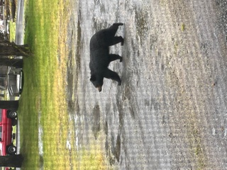
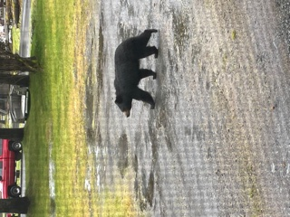

They say it takes 10,000 hours to achieve excellence.
When it comes to playing video games, I'm at about 2 or 3 levels of excellence.
My friend and I were some of the youngest competitors in the higher levels of CAL in Counter-Strike 1.6 at ages 11-13.
The World of Warcraft guild I ran with [Exigence] on Dragonblight was one of the top 5 north american guilds, and 1 of 23 guilds to clear Naxxaramas 40, and one of the small handful that did it before the 2.0 TBC prepatch talent updates. I also did an extensive amount of PvP with the 'Marshal' group as we called it. Never quite hit that rank 14 though ;P [On retail at least, done it like 8 times on private servers :D]
In Call of Duty [xbox], my friends and I were among some of the first to max prestige, leveling at a faster pace than the big youtubers. However they would get the game early and be somewhere between 3rd-5th prestige by the time we got the game, and we would be in 9th or 10th prestige by the time they hit max. Most of the big name CoD youtubers at the time would back out against us. Our K/Ds and W/Ls reflected this.
Now I am a bit more casual, being 'past my prime' as many would say, and having graduated from ASU and having a full time job.
I play a large variety of games now, of mention being Vanilla World of Warcraft[#1 horde guild on Kronos], Various BR Games, Starcraft 2 [Arcade Games], Crusader Kings II [A Song of Ice and Fire mod],
I am also very passionate about trying to get Legacy servers back #YouThinkYouDoButYouDont , and have alot of great content planned for when they do! #MakeAzerothGreatAgain edit: WE DID IT POGGERS
I also used to be an All-Star baseball player and Competetive Swimmer. I'm a bogey golfer, and really like playing water polo, water volleyball, sand volleyball, and ultimate frisbee. I have recently got back into Fitness and am currently Bulking doing PPL. Shoutout to /r/fitness.I love to travel and have seen alot of the world, but have alot more to see!
As for why I'm doing this, I can assure you it's not for the money, I just enjoy playing games more with other people, and as now many of my friends are getting married/having kids/have full-time jobs, there is less people to play with, I just think it would be awesome to have a little community to play, hangout, and chat with. Hopefully you want to stick around!